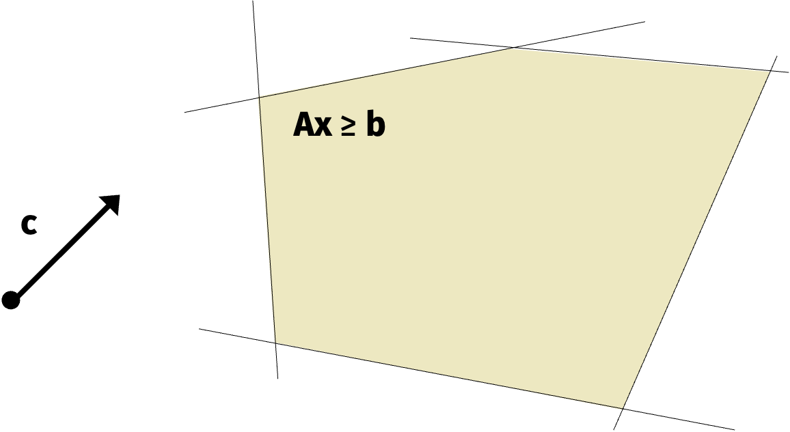

Linear Programs
We discussed the ellipsoid method last time. Today, we’ll see an application of the ellipsoid method to solving linear programs.
Linear programs are one of the most basic convex constrained, convex optimization problems. Let \(\mathbf{c} \in \mathbb{R}^d\), \(\mathbf{A} \in \mathbb{R}^{n \times d}\), and \(\mathbf{b} \in \mathbb{R}^n\) be fixed vectors that define the problem. The goal is to find \[\begin{align*} \min_{\mathbf{x}} f(\mathbf{x}) = \mathbf{c}^\top \mathbf{x} \text{ subject to } \mathbf{Ax} \geq \mathbf{b}. \end{align*}\]
Like before, we can think of the constraint \(\mathbf{Ax} \geq \mathbf{b}\) as a union of half-space constraints \[ \{\mathbf{x} : \mathbf{a}_i^\top \mathbf{x} \geq b_i \} \] for \(i \in \{1, \ldots, n\}\).

There are many applications of linear programs including:
Classic optimization problems such as industrial resource allocation, diet planning, and portfolio optimization.
Robust regression problems like \(\min_\mathbf{x} \| \mathbf{Ax - b} \|_1\).
Constrained regression problems like \(\min_\mathbf{x} \| \mathbf{x} \|_1\) subject to \(\mathbf{Ax}=\mathbf{b}\).
Polynomial time algorithms for Markov Decision Procceeses (MDPs).
Many combinatorial problems that can be solved by linear programming relaxations.
Linear programs were so popular that theorem results were published as front page news.
Theorem (Khachiyan, 1979): Assume \(n=d\). The ellipsoid method solves any linear program with \(L\)-bit integer valued constraints exactly in \(O(n^4 L)\) time.
After the theorem was proved, the New York Times published an article titled “A Soviety Discovery Rorcks World of Mathematics” on its front page.
In the context of the Cold War, the result was a big deal.
Not to be outdone, a researcher working in the United States proved the following theorem five years later which was again published by the New York Times in an article titled “Breakthrough in Problem Solving” on its front page.
Theorem (Karmarkar, 1984): Assume \(n=d\). The interior point method solves any linear program with \(L\)-bit integer valued constraints in \(O(n^{3.5}L\) time.
We won’t cover the interior point method but you can find lecture notes here.
The projected gradient descent optimization algorithm initializes at some point \(\mathbf{x}^{(0)}\) in the interior of the constraint space. Then, at each step \(t\), we compute the gradient \(\nabla f(\mathbf{x}^{(t)})\) and project the gradient onto the constraint space.

Once the iterate is along the constraint space, we can get stuck oscillating outside of the constraint space and only slowly converge to the optimal solution.
The interior point method is an alternative approach which, like its name suggests, stays in the interior of the constraint space.

By staying inside the constraint space, the algorithm can converge much faster.
Both the results for the ellipsoid method and the interior point method had a huge impact on the theory of optimization. However, neither of the algorithms are used in practice because the heuristic simplex method is much faster in practice.
These days, improved interior point methods compete with and often outperform the simplex method.
Polynomial time linear programming algorithms have also had a huge impact of combinatorial optimizaiton. They are often the work horse behind approximation algorithms for NP-hard problems.
We’ll see an example of a combinatorial optimization problem.
Vertex Cover
Consider a graph \(G\) with \(n\) nodes and edge set \(E\). Each node is assigned a weight \(w_1, \ldots, w_n\).
The goal is to select a subset of nodes with minimum total weight that covers all edges.
In the simple example in the figure above, the optimal solution is to select the two nodes with weights \(1\) and \(3\) respectively.
We can turn the vertex cover problem into a linear program. Let \(\mathbf{x}\) encode a solution to the vertex cover problem. That is, \(x_i = 1\) if node \(i\) is selected and \(x_i = 0\) otherwise.
Vertex Cover: Then the vertex cover program is \[\begin{align*} \min_{\mathbf{x} \in \{0,1\}^n} \sum_{i=1}^n x_i w_i \text{ subject to } x_{i} + x_j \geq 1 \text{ for all } (i,j) \in E. \end{align*}\]
It is NP-hard to solve the vertex cover problem exactly. However, we can use convex optimization to give a 2-approximation in polynomial time. The function is to minimize a linear (convex) function but the constraint is not convex because of the non-convexity of the set \(\{0,1\}^n\). We can relax the constraint to \(\mathbf{x} \in [0,1]^n\). Then the constraint is convex and we can efficiently solve the problem but the solution may not be integral.
Relaxed Vertex Cover: The relaxed vertex cover problem is \[\begin{align*} \min_{\mathbf{x} \in [0,1]^n} \sum_{i=1}^n x_i w_i \text{ subject to } x_{i} + x_j \geq 1 \text{ for all } (i,j) \in E. \end{align*}\]
Once we produce an optimal solution to the relaxed problem, we can round the solution back to the original constraint set.
Notice that the objective solution to the relaxed problem is always less than or equal to the objective solution to the original problem because we are consider strictly more possible solutions. Formally, let \(\bar{\mathcal{S}} \supseteq \mathcal{S}\) where \(\mathcal{S}\) is the original constraint set and \(\bar{\mathcal{S}}\) is the relaxed constraint set. Let \(\mathbf{x}^* = \arg \min_{\mathbf{x} \in \mathcal{S}} f(\mathbf{x})\) and \(\mathbf{\bar{x}}^* = \arg \min_{\mathbf{x} \in \bar{\mathcal{S}}} f(\mathbf{x})\). We always have that \(f(\bar{\mathbf{x}}^*) \leq f(\mathbf{x}^*)\).
So the goal is to round \(\bar{\mathbf{x}}^*\) to \(\mathcal{S}\) in such a way that we don’t increase the function value too much.
We’ll see this approach in the context of the vertex cover problem. Let \(\bar{\mathbf{x}}^*\) be an optimal solution to the relaxed vertex cover problem. Once we solve the relaxed problem, we will set \(x_i = 1\) if \(\bar{x}_i^* \geq 1/2\) and $x_i = 0 otherwise.
Observation 1: All edges remain covered. That is, \(x_i + x_j \geq 1\) for all \((i,j) \in E\). To see this, notice that either \(\bar{x}_i^* \geq 1/2\) or \(\bar{x}_j^* \geq 1/2\) so \(x_i + x_j \geq 1/2 + 1/2 = 1\).
Observation 2: We have that \(f(\mathbf{x}) \leq 2 f(\bar{\mathbf{x}}^*)\). To see this, observe that \[\begin{align*} f(\mathbf{x}) &= \sum_{i=1}^n x_i w_i = \sum_{i : \bar{x}_i^* \geq 1/2} w_i \\ &\leq \sum_{i : \bar{x}_i^* \geq 1/2} 2 \bar{x}_i^* w_i \leq \sum_{i} 2 \bar{x}_i^* w_i = f(\bar{\mathbf{x}}^*). \end{align*}\]
Since \(f(\bar{\mathbf{x}}^*) \leq f(\mathbf{x}^*)\), we have that \(f(\mathbf{x}) \leq 2 f(\mathbf{x}^*)\).
We just described how a polynomial time algorithm for solving linear programs gives a polynomial time 2-approximation for the vertex cover problem. Recall that exactly solving the vertex cover problem is NP-hard. In addition, solving the vertex cover problem within a \(\sqrt{2}\)-approximation factor is NP-hard by results in Pseudorandom Sets in Grassmann Graph have Near-Perfect Expansion.
It is widely believed that doing better than \(2-\epsilon\) is NP-hard for any \(\epsilon > 0\). This is implied by Subhash Khot’s Unique Games Conjecture.
Even though we don’t think it’s possible to do better than \(2-\epsilon\) in polynomial time, there is an even simpler algorithm that gives a 2-approximation for the vertex cover problem that doesn’t use optimization at all.